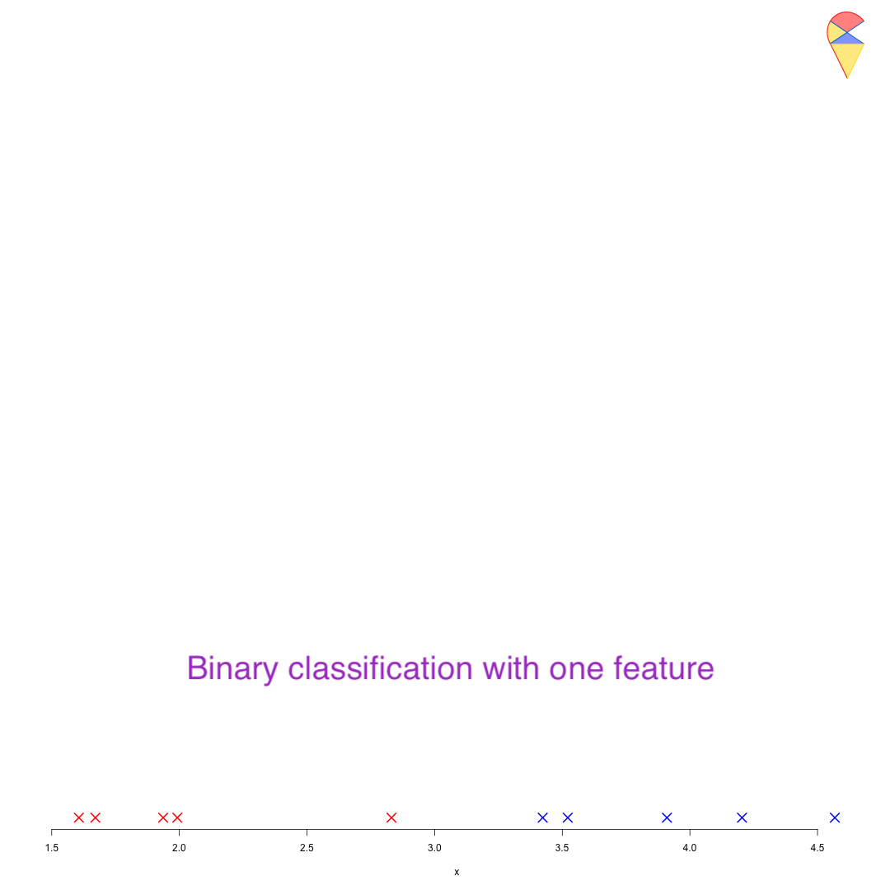
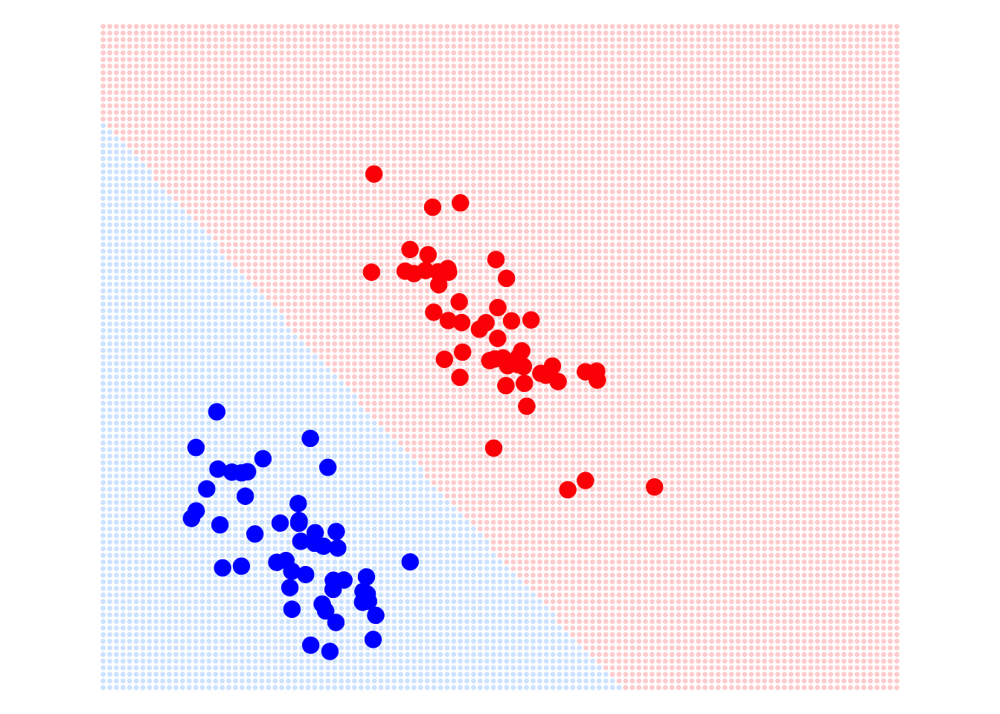

1 Regression Model for Classification
“Regression model for classification” sounds a bit strange. Do these two types of problems have something in common? How can we use a linear regression model to build a classifier?
1.1 Motivation
As we discussed earlier, if there is only one feature variable, how can we perform classification? Let’s revisit this simple problem to gain some insights. Based on our previous discussion, the key to this problem lies in determining the classification boundary, that is, finding a method to identify the cutoff. For example, when discussing Fisher’s idea, we mentioned that for two normal distributions with equal variance, the optimal classification boundary is the midpoint between the two population means. Now, let’s approach this from a different perspective.
The difficulty of this problem lies in the fact that different feature variables will have different criteria. For example, we might use body size to distinguish between ethnic groups, flower shape measurements to classify flower species, or image-extracted features to diagnose cases. However, there is no universal cutoff to serve as a standard for all of them. Therefore, we need to transform any variable onto a dimension that has a universal cutoff. So, which dimension is that magical dimension, and what should we do to find it?
We can use the target variable to find the magical dimension to perform the transformation. First, we encode the target variable to make the categorical variable numerical—for example, assigning 1 to the positive group and 0 to the negative group. Then, we estimate a linear regression model for the target variable based on the feature variables. Through the regression model, all observation points are projected onto that magical dimension, where 0.5 serves as the universal cutoff. See the demo below:

Remark: You might find this problem a bit tedious and think, “Why not just pick a random point in the region between the two populations?” However, note that this approach is overly subjective. What we need is a universal method to calculate this cutoff, such as Fisher’s idea or the method discussed here. In the future, we will introduce a third approach. You can also think about whether you have any good ideas.
1.2 Classifier based on Linear Regression Model
This idea can be naturally extended to the case of multiple feature variables. Suppose we have a set of feature variables, \(X_1,X_2,\dots,X_p\), and the encoded target variable \(Y\). The trained multivariate linear regression model is \[ Y = w_0 + w_1X_1 + w_2X_2 + \dots + w_pX_p \] With this model, the \(p\) feature variable values of any observation are recalculated and used for the final decision. We call the fitted \(Y\), \(w_0 + w_1X_1 + w_2X_2 + \dots + w_pX_p\), Score. So, if \(\text{Score} > 0.5\) then it will be assigned as positive, and if \(\text{Score} < 0.5\) then it will be assigned as negative. So the decision boundary will be \(\text{Score} = 0.5\), i.e. \[ w_0 + w_1X_1 + w_2X_2 + \dots + w_pX_p = 0.5 \] Therefore, the classifier based on linear regression model is a linear decision boundary, the regression coefficients are the weights and \(0.5-w_0\) is the cutoff, or bias term. See the demo below.
There are two feature variables and the target variable has been encoded. That plane in blue-red gradient color represents a linear regression model with two variables, projecting the information from the two feature variables onto a third dimension. The black plane, parallel to the feature variables’ plane, represents our universal cutoff. If you rotate the 3D plot, you will see that the intersection line between the cutoff plane and the regression model (the blue-purple plane) is the classification boundary in the 2D feature space.
1.3 Main Issues
In fact, linear regression models have many advantages. For example, the optimal solution under the MSE loss function has an analytical solution, meaning we have a formula to calculate the parameters of the regression model, which makes linear regression very efficient. However, in machine learning, it is almost never used as a classifier. Why is that? The main reason is that it has high requirements for the data distribution, and any significant outliers will affect its performance. For example, in the image below: on LHS is the classification boundary determined by the linear regression model. It looks fine with no issues. However, if we add some outliers to the red group, see the RHS, the decision boundary determined by the linear regression model is severely affected. Even with this simple problem, the linear regression model can make mistakes.

So, how can we solve this problem? In the next section, we will answer these questions and introduce the important classifier in machine learning: logistic regression.
Quiz: Can you use the basic statistical knowledge you’ve learned to explain why a classifier based on a linear regression model is sensitive to outliers?